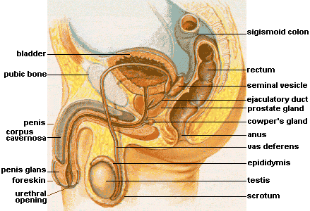
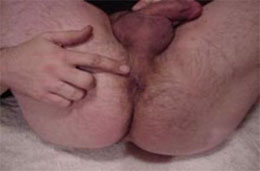
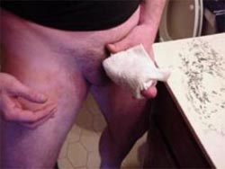
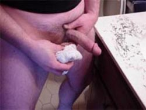
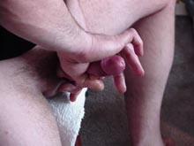
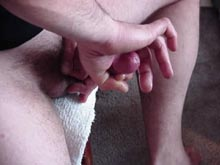

这套练习说明书有几个前提。第一个前提是：循序渐进才会有好效果。这意味著，你做为一个使用者，在开始前必须阅读所有的步骤。最后，练习有效取决于你选择的练习方式，以及努力和耐心。每一个步骤和练习都有一个描述章节，一些可供选择的方法，和时间安排。这样你就会在全局观念上明白每一种练习的作用，练习的目标，以及你要多长时间做一次，每次做多长时间。整套练习计画的安排完全取决于你自己。我们建议你做好日常计画的安排，在不同的两个时间里做不同的练习。如果你选择或实验不同的练习方法，你可以在不同的时间做不同的练习，比如，小葛想知道哪种增加长度的方法更好，他可以在早上做完一般的PC肌肉练习和准备练习后，紧跟著做长度练习，而在晚上做另一种长度练习。小葛可以花几天时间来决定使用哪种他认为对自己更有效的方法。
练习描述
PC肌肉练习很快成为了天然阴茎增长练习的主要方法。PC肌肉在阴囊与肛门之间，与前列腺很接近。当PC肌活动时，它可以控制男性的勃起活动。拥有强壮的PC肌会得到更强有力和稳定的勃起。

男性生殖系统图解
你可以通过这张图解知道PC肌位于阴囊和肛门之间。PC肌是控制排尿、射精和勃起的肌肉群之一。当你通过自我控制中断排尿时，你就会感到PC肌所在的位置了。
开始
你的计画从这里开始，PC肌肉练习是进入状态的最基本的练习。每天锻炼PC肌，当你对阴茎进行增长和增粗练习时，它不仅可以增加进入阴茎的血流量，而且，可以增加勃起的力度和硬度，以及增加每次性交的快感。
益处
PC肌几乎与所有延长性精力、男性生殖等性的因素有关。强壮的PC肌可以预防前列腺癌，前列腺癌是45岁以上男士面临的严肃现实。许多的男性科学研究都支持PC肌肉练习。
练习PC肌
PC肌练习是这套方法里很重要的一部分，因为它可以增加勃起力度和血流量。pc肌肉练习是整个练习计画里固定要练习的。不管你是否完成了其他日常练习，PC肌练习是每天必须的。你必须明白，其他练习有可能不能每天都练习，有可能变换时间和地点，但PC肌肉练习是在哪里都可以做的。对PC肌的坚持练习是获得其他练习有效果的最基本因素。
目标：每天都要完成PC肌练习！
PC肌练习（练习1）
目标: 这个练习的目的是让你分辨PC肌肉的位置，帮助提高性快感和性控制能力。pC肌肉位于肛门直肠和前列腺之间，最直观的位置，从外面看，是在阴囊和肛门之间，当你收紧肌肉时，你就会知道它的位置了。

PC肌肉是控制勃起运动的，控制中断排尿的肌肉也是它。女人的阴道收缩，高潮起伏，也靠的是PC肌肉，因此，PC肌肉对男人和女人同样重要。
练习:
就像自我控制中断排尿一样，逐渐收紧PC肌，坚持收紧5秒钟。逐渐收紧PC肌5秒钟，然后，放松PC肌5秒钟，这样就完成了一个组练习。练习时，从10个组开始，逐渐增加到50个组，这就叫1回合。建议每天练习2-3回合，即100-150个收紧-放松
PC肌练习什麽时候都可以做，因为那只是收紧-放松别人看不见的肌肉，在汽车里，在等电话时，都可以练习。建议以周来增加练习的组数。比如，小军开始时以10组为一个回合，一周以后，增加到20组一个回合，4周后，就增加到了50组一个回合。
当达到50组一个回合之后，建立有规律的象例行公事般的练习是很重要的。坚持不泄的练习是以后不断获得好处，得到更多快感的基本。一个个人的日常练习在什麽地方都可以进行，10-50组一个回合，每天3-5回合，达到50组/回合，每天5回合后，就一直保持下去。
高级练习：
高级练习适用于达到50组/回合以及希望获得更强壮的PC肌的练习者。高级练习已经修改成了增加阴茎直径的练习，使用强健的肌肉和增加的血流量出获得增粗的效果。
高级练习的补充这种练习必须私下进行，不像PC肌练习一样随处都可进行。练习时，你的阴茎是处于勃起状态的，但不需要润滑液。如果你需要刺激阴茎才能勃起，或者，使用你强健的PC肌把血液进入阴茎达到勃起，都是可以的。
当你全部勃起后，用手抓住阴茎的中部。用你的整个手，包括5只手指。收紧你的PC肌，坚持2秒钟。这时用你的手给阴茎增加压力，即抓紧阴茎。你可以感到有一些阻力。PC肌要收得更紧，以保持阴茎的硬度和血液，这样PC肌肉锻练的强度就加大了，自然勃起硬度就会更高。
这样的对抗练习重覆10次。这个过程大约需要30秒到1分钟时间，取决于你收缩和暂停的休息时间。儘量多做，直到你的PC肌收紧不能对抗阻力为止。逐渐增加你的练习次数。这样的高级练习每次不要超过3-5分钟。
每天进行一次这样的PC肌肉高级练习，你可以使PC肌肉更强健。注意：不要在普通PC肌练习之前就做高级PC肌练习，你在做其他练习之间，至少要间隔1小时，才能做高级PC肌练习。一段时间后，高级PC肌肉练习可以取代普通PC肌肉练习，但高级练习需要更多时间。
读过了PC肌练习方法之后，你就进入了如何让更多的血液进入阴茎这一环节了。这叫做“热敷”，加热阴茎会促进血液循环，让更多的血液流入阴茎。
“热敷”步骤在阴茎增长计画里扮演重要辅助角色，不过它会消耗你一定的时间。 经常进行“热敷”或其他类似的做法是很重要的，特别是你才刚刚开始这个计画。
对有循环系统障碍的男士来说，用淋浴头向阴茎喷射温热的水是一个非常不错的主意。 老人或糖尿病患者或其他有循环系统疾患的人，用淋浴头向阴茎喷射温热的水不仅改善了阴茎的血液循环，而且，对改善身体其他部位的血液循环也是有好处的
热敷 (练习2)
热敷与PC肌锻练一样重要。让阴茎得到一个良好的环境很重要，首先让阴茎有良好的状态。当举重或做健身时，喝水可以让身体有充足的水分，不至于脱水而影响锻练效果。做PC肌肉练习和“热敷”，你可以让阴茎保持富含养分，富含水分，血量充足。
目标： 每次锻练前务必做“热敷”。每次做其他练习前抽出几分钟做“热敷”会对整个练习大有助益。
练习：
我们很容易想到热敷与血液循环有关。热可以让血液在身体里流动更顺畅，好的血液循环对健康是有帮助的。热敷的主要目的就是在进行其他练习前，让血液在阴茎里流动更顺畅，让练习效果更好。做“热敷”时阴茎要勃起。
第一步： 找到一块毛巾，把它放到温水里。注意： 水不要太热，水太热会造成伤害。把毛巾拿起，轻轻放到腹部，测试一下水温是否合适。若水温合适，进行第二步。
第二步： 把热毛巾包在整个阴茎躯干上，直到你感觉不到毛巾还有温度，或者2-3分钟后。当你移开毛巾时，阴茎应该是略带红色的，因为血液循环加快了。若感觉阴茎还没有血液循环加快，温热，微红色，请重複第一和第二步。做这个练习时要注意上身的保暖。

结论：
这一程式是为了增加阴茎的血流量，达到更好的锻练效果。血液循环同样能加强感觉的敏感性。
热水淋浴方法：在洗澡间里用热水淋浴阴茎效果也一样的。这是一个很好的解决方法。
准备练习与计画里其他方面的练习一样重要。准备活动是帮助阴茎进入练习状态的活动，就象“热敷”练习，或者pc练习，但它是直接通过运动阴茎的组织和单元来达到要求。
做准备练习的时候，你必须要用和计画本身同样的强度来揉捏、练习。准备练习做得越多，效果就越好。
准备练习需要做几件事情。第一件事就是经过挤捏或弯曲阴茎，让阴茎里的血液运动起来。做准备练习的时候，同时做PC肌练习，即在同一时间内对两个不同的部位进行锻练。
准备练习里的挤捏阴茎与挤奶动作差不多，但它并没有挤奶那样持久，它把血液挤到各个方向。
弯曲阴茎练习与此类似，它把血液推挤到指定的方向。它的原理是，如果经过弯曲阴茎来减少弯曲内侧的血液，就等于你把血液赶到了弯曲的外侧。这就有助于阴茎的所有部分都能获得富含氧气的新鲜血液，这个练习要安排在勃起和“热敷”之后。
注意： 当做完准备练习，而进入到长度或粗度练习时，你必须保持勃起状态。在练习的过程中保持勃起。
弯曲练习（练习3）
弯曲运动的主要目的是让阴茎里的血液得到充分的扩散和运动。做弯曲运动最长时间不要超过5-10分钟。每次做的时间要比上次做的时间短，因为阴茎已对弯曲一步一步地充分适应了。但你每次花在弯曲练习上的时间不得少于1-2分钟。
目标：如果你在某日选择弯曲练习作为准备练习，你就必须先做弯曲练习，然后才做其他练习。注意： 在不同的日子，你可以选择不同的准备练习，准备练习可以交替在你的锻练日程上出现。把你已做的练习在锻练日程上打个小标记，以后就按日程规定的练习。弯曲练习最少要做1-2分钟。
练习：
找一个隐私的地方。最好有润滑液，比如凡士林，按摩油，或其他可润滑的东西。坐下，背部直立。重力会让更多血液流向下体，对练习会有好处。坐舒服后，把阴茎拿到手里。
把拇指和食指形成环状，往外挤推阴茎，不要弄疼阴茎。手指环往回推时，稍微放松，对阴茎不要施加压力，手指环迅速移回阴茎根部后，在根部再次施加压力往外推挤。你正在把血液迅速地移向阴茎的头部。这样做不会象你用整个手去推挤阴茎那样好受，但千万不要用整个手去刺激和推挤阴茎，仅仅用拇指和食指形成的环即可，这样会更有效。
你正在慢慢勃起，继续推挤阴茎。你会感觉到血液对阴茎皮肤的压力。继续推挤，把血液移向阴茎头部。 当你完全勃起时，把手移到阴茎根部，手指环握紧。
另一隻手轻轻握住阴茎，把阴茎推到左边，然后右边，然后往下。 每一方向都连续做3次，然后再换方向。完全勃起的状态是最好的练习状态，因为皮肤已完全扩张，血容量也接近最大了。
重複第四步做3次，这样每个方向都得到9次的牵拉和扩张。 等几秒钟，然后放开你在阴茎根部的手。你可以感觉到血液再次流入。若你感觉阴茎不适，你可以马上松开你的手，因此，练习是安全的，我们做的仅仅是增大阴茎而已。
放松你的有一定握紧压力的在阴茎根部的手指后，你的血液又重新开始流动了，这时开始重複第二步，手指环不要超过敏感的龟头，仅仅在阴茎躯干推挤。这也是训练控制的练习，你可以推挤你的阴茎以达到勃起，但并不射精。你可以通过这种练习是自己冷静下来，而不是满脑子黄色的图片和想法。
完成后，松开手，放松阴茎。
慢慢站起来，让血液流回你的大腿和其他部位。这整个练习不超过1-2分钟。可变动的做法： 可以往上和往下弯曲阴茎。
屈曲练习（练习4）
屈曲练习结合了PC肌和挤捏动作。pc肌收缩有利于血液循环，让健康的贺荷尔蒙从睾丸里经过血液流入和流出阴茎。挤捏动作可以在练习前就循环血液。在热敷之后，挤捏练习是很有效的。 做屈曲练习直到你不能坚持用你的PC肌肉保持勃起为止。一旦你能做到，你就可以进行下一步的其他练习了。如果你注意到你在这个练习后还不能保持勃起，你可以先练习弯曲练习，隔天进行。
目标： 如果在某一天你选择屈曲练习作为准备活动，你就必须先做屈曲活动，再做其他练习。注意： 在不同的日子，你可以选择不同的准备练习，准备练习可以交替在你的锻练日程上出现。把你已做的练习在锻练日程上打个小标记，以后就按日程规定的练习。做屈曲练习直到你不能坚持用你的PC肌肉保持勃起为止。
练习：
首先，你可以站著，坐著，躺著也行。放音乐是在练习过程中保持放松的好办法。在隐私的地方进行，使用润滑液。
涂抹润滑液，让阴茎勃起。 分散你的心思，你保持勃起的时间越长，锻练效果就越好。
像手淫一样来回推挤阴茎，大约5-10次，但不要射精，保持心思分散，可以听音乐，或看电视，目标是保持完全勃起，坚挺的完全勃起。
待阴茎完全勃起后，把两隻手放到阴茎根部，形成一个缺口，手指放在阴囊和肛门之间的部位，离睾丸大约1寸的地方。拇指触到腹部。
这时，用你的手指和拇指按压下去，只用你的手指，不要用到你的掌心和手掌。 收紧你的PC肌肉，让阴茎勃起，一直坚持，直到你不能坚持为止，这时你的阴茎马上就会软下去，这是自然的现象。松软后，再次推挤阴茎以达到勃起。
等待大约30秒到1分钟，保持完全勃起状态，重複上面的练习，次数越多越好，一直到你无法让PC肌肉保持勃起为止。
到此，再次拨弄你的阴茎，但不要射精。心里想著失去勃起，松弛、松弛，仅仅推挤阴茎躯干，不要触及龟头，分散心思，控制你的呼吸和心率。这也是在性交过程中的一种好习惯，这不会让你太快就达到高潮而射精。 这一步骤的目的是失去勃起。注意： 如果你在某些时候在某个练习时不能让阴茎松软下来，射精也是可以的。这样做对你没有帮助，但对你也没有坏处。学会这样做是一个很好的控制练习，它会对你将来的性交很有帮助。
一旦你完成了这个练习，进入完全放松和休息的状态，你可以站起来或者四周走走，让血液流回其他部位。如果你因为练习而感到不适或疼痛，或者你的耻骨联合肌感到酸痛，可以暂时中断1-2天，然后当你感到舒服的时候可以再次练习。这个练习若可能的话最好天天练，但中断1-2天对锻练也是没有影响的。
伸展练习（练习5）
伸展练习的目标就是松弛状态，因此这对那些不能保持勃起状态的男士并不难。另一方面，要保持松软状态，在往阴茎上涂抹润滑液时有些困难。要保证你不要触及龟头敏感部位，把注意力集中在移动血液到松弛的阴茎上，这样你就不会坚挺勃起了。这样对那些想在性交中多次射精和自我控制性交状态的男士来说是很有好处的。
目标： 伸展练习对那些想在练习前获得良好血液循环的男士，以及想增强勃起和射精控制的男士有好处。伸展练习仅用1-2分钟即可，太长时间会导致不适。如果你觉得1-2分钟太少，练习时间也不能超过2-3分钟，延长到2-3分钟时，你必须已经锻练伸展练习已有7天。
练习：
如果你的阴茎是冷的，或者没有完全松弛，即你站起来的时候，阴茎没有松弛悬垂，像6点的时针，当你摆动臀部的时候，阴茎没有跟著摇摆晃动。拉伸阴茎，以达到松弛悬垂。当阴茎变冷，阴茎会缩回，就象遇冷睾丸会收缩一样。增进阴茎的血流，温柔地刺激阴茎，你可以使阴茎达到松弛的状态。如果你的阴茎已经松弛了，那麽，进入下一步。
在阴茎上涂抹足够的润滑液。你就不会感到有摩擦力了。维他命E 润滑液和水溶性性交润滑液是推荐的。用两隻手, 分别往外往下推挤阴茎，两手交替进行。
这样重複进行，至少1-2分钟，或者你能做多少就做多少，直到你感到不适。若你感到不适，可马上停止。站著进行效果更好。
完成后，放松全身，前后运动髋部。
握紧练习（练习6）
握紧练习对一些男士是有帮助的，尤其是对那些阴茎小或者手掌太大的男士。解决方法是把手反一个方向，就行了。如下图所示：

在推挤运动中有困难的男士可以使用这种方法。